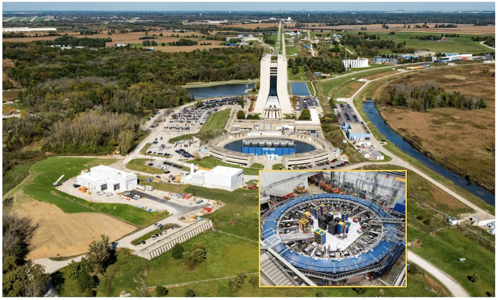

Muon g−2
Anomalous magnetic moment缪子反常磁矩
- Precision goal精度目标
- 140 ppb
- Experiment实验
- Fermilab E989
- Our role我们的工作
- ωa analysis · beam dynamicsωa测量 · 束流动力学修正
Fermilab's E989 aims to measure the muon g−2 to 140 ppb. If the gap between theory and experiment holds, the significance would exceed 7σ — a clear sign of physics beyond the Standard Model. We are responsible for the anomalous precession frequency measurement and beam-dynamics corrections.费米实验室E989实验致力于将缪子g-2测量精度提升至140 ppb。若理论与实验的偏差保持不变，统计显著性将超过7σ——明确的超越标准模型新物理信号。课题组负责反常进动频率测量及束流动力学修正。
Learn more了解更多 →